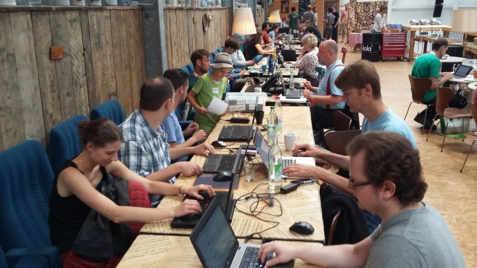

We will follow the FOSS4G tradition of hosting a code sprint after the conference, and additionally be including OpenStreetMap Mapathons. The Community Day will be held Friday 23rd of November in the Old Arts Building at the University of Melbourne. We will be starting at 9am and finishing at 5pm, with free catering provided throughout the day.
Participation in the Community Day is free of charge and all folks interested in giving back to open source and open data geospatial communities are welcome.
This is open to everyone - from novice to expert. It is a cooking pot of ideas where project insiders meet users and each helps the other. There’s always plenty to do – it’s not only about programming and/or street-mapping. Here are some ideas for topics that you can get involved with:
-
Humanitarian mapping
-
Local mapping
-
Testing, improving instructional documentation and translations
-
Improving features in software and/or identifying and debugging glitches.
Registration at the conference is not a prerequisite for participation in the Community Day.
If you are interested in registering, please do so here: http://communityday.foss4g-oceania.org/
Community Day Events
As well as helping each other with our own favourite open-source and open-data geospatial, a number of larger projects will also be running on the day that would love your assistance:
Missing Maps Mapathon
Organised by Shana Liem, Global Health Alliance Melbourne.
With the assistance of the Missing Maps project, Maptime Melbourne and Global Health Alliance Melbourne (GLHAM) will be running a Mapathon to help map the parts of our region and the developing world where infectious diseases affect urban/rural communities. With your help we can directly improve the lives of some of the planet’s most vulnerable people. Both beginners and experienced mappers are welcome to join this mapathon.
All you will need is a laptop (please bring your own with you), a mouse and enthusiasm (mouse isn't absolutely necessary but makes the mapping A LOT faster).
Improving OpenStreetMap with government open data
Organised by Andrew Harvey.
In recent years government agencies have been opening up more of their datasets to the public under open licenses, with many of these ready to use
in OpenStreetMap - https://wiki.openstreetmap.org/wiki/Australian_Data_Catalogue.
Using tools to help automate comparisons between OpenStreetMap and other open data sources and manually reviewing each change together with other available ground truthing sources, let's see how much we can improve OpenStreetMap through a local mapping import sprint.
Some prior work on imported NSW Public Schools data into OSM can be seen at https://lists.openstreetmap.org/pipermail/talk-au/2018-April/011791.html.
Easing into open source geo-software
Organised by Adam Steer.
This event is aimed at helping people new to open source software development ease into the system.
We will have a few ‘mentors’ of varying experience available to help people take their first steps to contributing to code bases - working on submitting issues, finding issues, forking repositories, making pull requests. Or other tasks like adding themselves to the OSgeo system. In a do-ocracy, it can take some confidence to swing out on the ropes - this event aims to give people a boost.
Attendees should come along with a favourite project in mind to work on - there’s no requirement to choose a specific tasks, work on something which
interests you!
With some luck, we will also have a few people in the room who are able to accept pull requests and updates - to provide that needed confidence boost of getting a thing done.
There are no formal lectures or guided discussions, just turn up with a laptop and an idea! We’re there to help!
Open Data Cube
Organised by Alex Leith.
The Open Data Cube project would like to explore the integration of a WMS service with a Jupyter environment to enable the use of Open Data Cube to produce and save data, and enable it to be visualised and shared. This will be a rapid hackathon to build a proof of concept that should be able to be refined post-event in order to build operational capacity.
OSGeoLive Quickstart refresh and/or Move to the cloud
Organised by Cameron Shorter.
OSGeoLive is distribution of Open Source Geospatial Software preconfigured with ~ 50 applications, datasets, project overviews and quickstarts. It is used at conferences and training sessions around the world and is often people's first exposure to OSGeo software.
We have two things we'd like to tackle:
1. Run all the quickstarts, update screen shots, correct docs or write bug reports. New users see problems in documentation that developers are blind to. And we are aware that many of our Quickstarts have become dated when software was updated.
2. For techies: We would love to be able to install OSGeoLive in the cloud, and are looking for some techies to help work out how to do it. Having a cloud version of OSGeoLive will make it much more accessible as a learning platform.
Data Visualisation and Story Telling with Open Government Data
Organised by Su-Lin Lim (DELWP) & Suneel Jethani (DPC), Victorian Government
Data journalism, and visualisation are fast becoming a powerful way of telling stories. News content is increasingly being organized around structured pieces of data, as opposed to conventional news story formats and narrative frames. Accessing any of the datasets on data.vic, this challenge asks participants to extract and tell stories from data. Alternatively how might we facilitate citizens’ own inquiries and investigations via the Victorian Government Open Data Portal?
If participants are interested in more concrete problems, data.vic are particular interested in solving the following problems:
- To improve accessibility of data, is there a way to build a plugin for WFS or WMS to make spatial data more accessible in open data portals running CKAN?
- To improve how metadata is harvested across organisations, is there a way to create a JSON template to harvest ISO 19115 compliant geographic metadata
